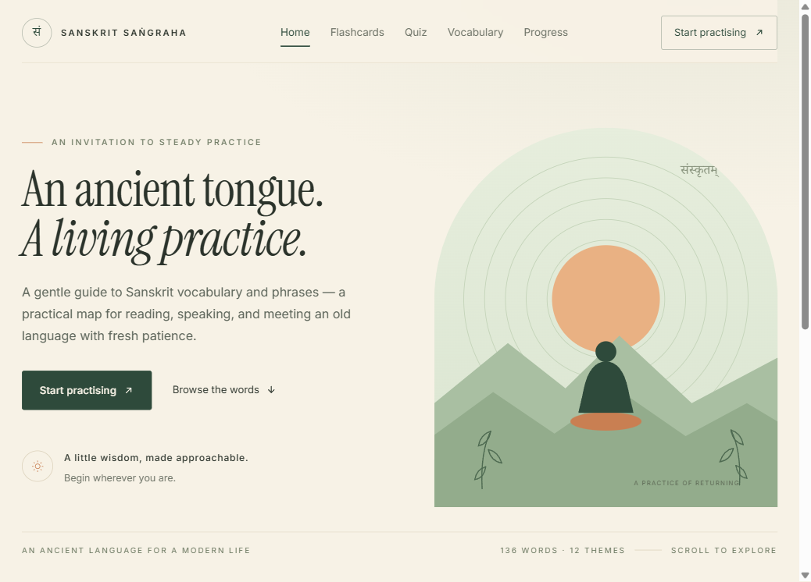
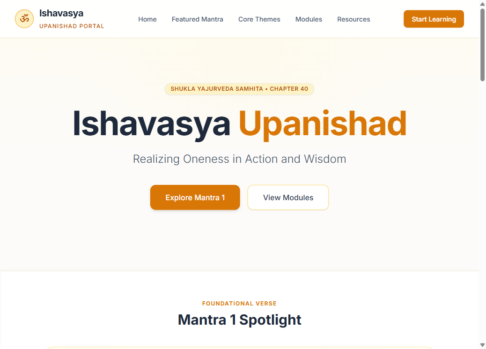
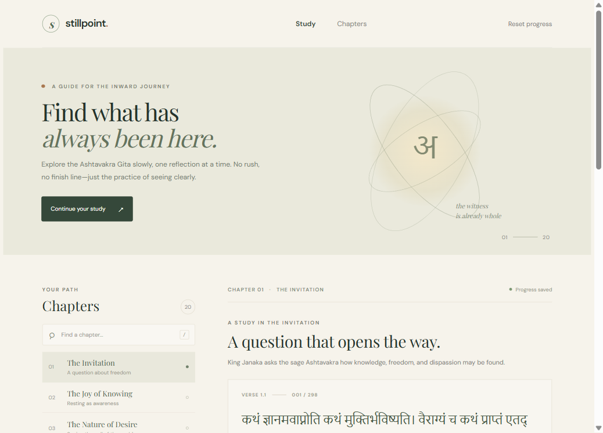

Language · Foundations
View project
Sanskrit Learning
An interactive platform designed to help learners explore and master the fundamentals of the Sanskrit language.

Wisdom · Upanishads
View project
Isha Vasya Upanishad
Explore the profound spiritual insights and verses of the Ishavasya Upanishad with clear readings and reflections.
Practice · Yoga
View project
Patanjali Yoga Sutras
Dive into the foundational text of classical yoga, outlining the path of mental discipline, meditation, and liberation.

Wisdom · Non-duality
View project
Ashtavakra Gita
Discover the radical non-dualistic wisdom and direct dialogues on ultimate freedom and self-realization.
Wisdom · Bhagavad Gita
View project
Bhagavad Gita Learning
Explore the Bhagavad Gita through Sanskrit verses, transliterations, daily reflections, and chapter-by-chapter reading.